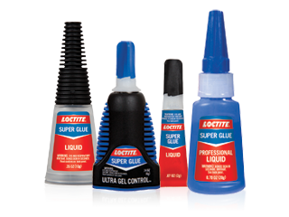
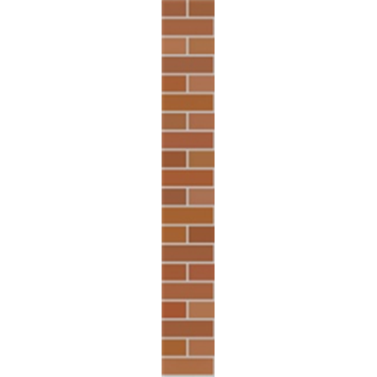
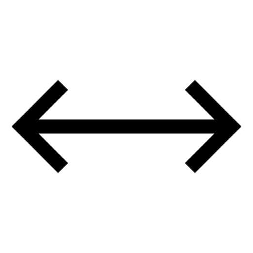
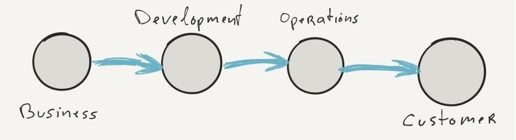
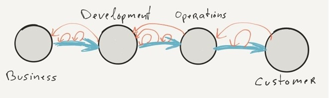
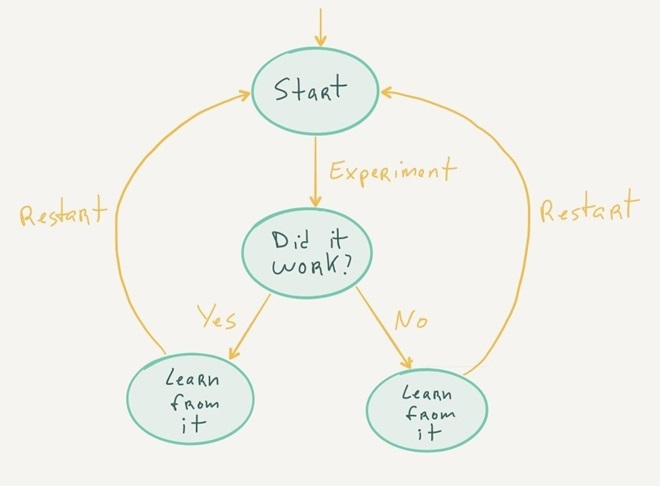

DevOps
for oss dødelige
Kristian Haugene
Utvikler
DevOps entusiast
Docker nerd
Reise - Dykking - Kaffe
Utfordring:
- Mange utviklere
- Samme kodebase
- Få testmiljøer
Ønske:
- Støtteverktøy for utviklere
- Større grad av automatisert test
- Enklere å teste features separat



Vi kjører demo!
Produkteier

Test og utvikling
Drift
Kunder og brukere
Produkteier
Agile Manifesto

2001
Test og utvikling
Drift
Kunder og brukere
Produkteier
Agile Manifesto
2001
Test og utvikling
DevOps
2008
Drift
Kunder og brukere
Produkteier
Agile Manifesto
2001
Test og utvikling
DevOps
2008
Drift
Lean Startup
2011
Kunder og brukere
We have come to value:
Individuals and interactions
Working software
Customer collaboration
Responding to change
Working software
Customer collaboration
Responding to change
over
over
over
over
over
over
over
processes and tools
comprehensive documentation
contract negotiation
following a plan
comprehensive documentation
contract negotiation
following a plan
That is, while there is value in the items on the right,
we value the items on the left more.
Reduce Waste!
Men hvordan?
Færre barrierer
Mer feedback
Prøv og feil
New Public Management
“... developed during the 1980s as part of an effort to make the public service more "businesslike" and to improve its efficiency by using private sector management models.“
New Public Management
“Resultatenhetene styres med måleindikatorer som kan vurderes som oppfylte eller ikke“
“... incitamenter til å yte mer gjennom bruk av prestasjonslønn, resultatfinansiering og kontrakter. Men også i enkelte tilfeller sanksjoner dersom mål ikke nås.“
New Public Management
“Det finns mätningar som visar att av en arbetstimme använder en socialrådgivare 45 minuter till rapportering och dokumentation, så att det bara återstår 15 minuter till att träffa klienterna.“
New Public Management
“Sagen er nemlig, at englænderne hverken har fået ’mere for mindre’ eller ’mindre for mindre’. De har i stedet fået ’mindre for mere’: mindre servicekvalitet for flere penge.“
!SCRUM v2.0
Husk...
DevOps er en kultur,ikke en teknisk utfordring
Husk...
Du trenger ingen DevOps-strategifor å bruke litt superlim og gaffa